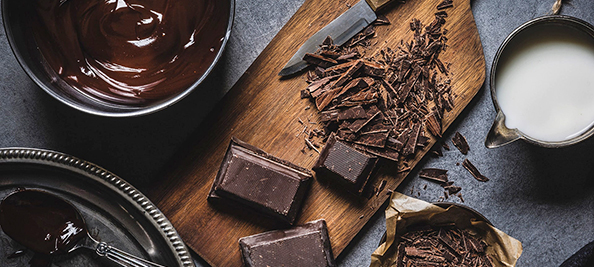
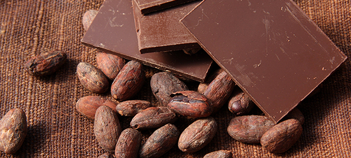
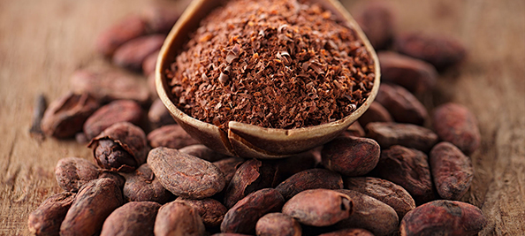
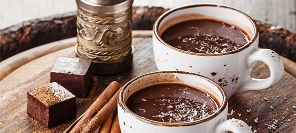

Introducing Cacao

The story of chocolate begins thousands of years B.C. in the region we now know as Southern Mexico and Central America. A tree bearing unusual fruit with vibrant colors produced seeds so valuable that it was considered to be a gift from the gods.
It was the cacao tree, known to the Aztecs as Xocatl. Aztec people were not the first to discover and cultivate this magical fruit. The credit for that belongs to earlier Mesoamerican civilizations.
But, their empire was dominant and their passion for the cacao bean was unprecedented. The value of chocolate as a commodity reached new heights under the Aztec Empire.
Cacao tradition was alive and well with the Aztecs. Did chocolate die with the Aztecs? No, the end of this great empire was just the beginning for chocolate in another part of the world.
Meet the Aztecs
Nomads from the North
The Aztec civilization began when the nomadic people known as the Mexica migrated from the North in the 13th century. They came from a place they called Aztlan which most archeologists believe was a region that is now the southwestern United States.
They attempted to settle in the Anahuac valley (now Mexico) but were unable to find a home where they were not met with hostility from other native cultures. They bounced around, but did not give up their search for a land to rebuild Aztlan.
They found a spot on an island in a lake they called Texcoco. It was marsh land - not ideal for building - but they built nonetheless. It eventually became the city of Tenochtitlan which means "Place of the Cactus Fruit".
Over the next 300 years, they thrived. They were a community of innovative developers, advanced farmers, and fierce warriors. The Aztec empire solidified through the alliance of three cities: Texcoco, Tenochtitlán (Mexico), and Tlacopán. It was this political structure that enabled Tenochtitlan to become of the most populated and developed cities in the world.
A day in the life: Tenochtitlan
What was everyday life like for the Aztec people? Answer: A lot of farming, a lot of school, and a human sacrifice here and there.
The lower class saved their beans
Aztec people were separated by many social strata, the most important of which were the upper-class nobility (known as pilli) and the lower-class (known as macehualli). Slaves existed but were given the opportunity to work and buy their way out of slavery.
It was unlikely that you would see a person of the macehualli or slave classes drinking chocolate. They held onto their cacao beans because they were a monetary equivalent.
Xocolatl was the spoken word
The Aztecs spoke language called Nahuatl which is known for having very long words. Nahuatl fragments can still be found in modern Latin American dialects.
For example, the words "Chocolate" and "Coyote" are both rooted in Nahuatl. While we can't give credit to the Aztecs for discovering chocolate, but the name they gave it, "Xocolatl" has stood the test of time.
Keep it clean
One might assume that a nomadic tribe that settled in a marsh would live in filth. Not the case with the Aztecs. They bathed every day and believed that a hot bath could cure sickness. Every dwelling had a bath house with a fireplace to create a steam-room effect.
King Montezuma is reported to have bathed twice a day - undoubtedly while holding a chocolate drink.
Growing young minds
The education of the Aztec child was taken very seriously. In general, the parents would teach important lessons such as fishing, farming, weaving a loam, and grinding corn. But, the education continued. Aztec was one of the first cultures where all children went to school. The most desirable type of school was the Calmecac where a high priest taught astronomy, the calendar, writing, math, and religion.
The education of the Aztec child was taken very seriously. In general, the parents would teach important lessons such as fishing, farming, weaving a loam, and grinding corn.
But, the education continued. Aztec was one of the first cultures where all children went to school.
The most desirable type of school was the Calmecac where a high priest taught astronomy, the calendar, writing, math, and religion.
The gods want blood
The most important gods in Aztec culture were Huitzilopochtli (god of war and sun) and Tlaloc (god of rain). The people believed that these gods were not satisfied until they received an offering of the blood of innocent people. The rituals were horrific. Some were an extraction of the heart of a living person. Aztecs viewed human sacrifice as repayment for the sacrifices gods made in creating a good harvest or the sun/rain.
Aztec culture took the gruesome practice to a level not seen before by another civilization in the region. When the weather took a dramatic turn, threatening the crops, they sacrificed more people. The victims were usually prisoners of war, but in some cases, the loser of a ball game would get the call.
Aztechs reach new heights
The Aztec Empire was the most dominant kingdom in the region. They developed a powerful army, alliances, and a city-state system that facilitated trade and allowed their ideology to spread through a network of communities. They built canals, causeways, palaces, and temples including Templo Mayor which stood in Tenochtitlan (now Mexico City). They created and collected impressive art that focused on animals, gods, and plant life.
The calendar used by the aztecs had 365 days and 18 months - remarkably accurate and somewhat similar to what we use today. At its height under Montezuma II, the empire ruled over 15 Million people and Tenochtitlan was home to more than 200,000 people.
The Aztechs were followers
What is Mesoamerica?
3. May Improve Blood Flow and Lower Blood Pressure
The region that covers most of what we now refer to as "Central America" from part of Mexico down through Costa Rica and Nicaragua is Mesoamerica. Ancient Mesoamerican civilization began with the Olmecs who took root in the fertile lands of what we might refer to as south-central Mexico. They developed traditions, agricultural practices, and religious beliefs that were the basis for Aztec civilization.
Olmec Foundation
Archeologists have different understandings of the timeline of Mesoamerican civilizations. But there's a general agreement that the Olmecs paved the way for Zapotec, Teotihuacan, and Maya. The Maya thrived for a long period of time (about 2500 years). After the Maya, the Toltecs rose to power and many Mayan ideas resurfaced. These cultures were forebearers for Aztec tradition. What do Mesoamerican civilizations have in common? They broke from the pattern of nomadic communities with farming and building community. They created magnificent monuments and statues, made advancements in mathematics and the calendar, and most played a ball game (known as "ōllamalitzli " to the Aztecs). They had social classes, central places of worship, and developed trade with other regions. Mesoamerican gods were similar across each civilization (or the same in some cases) and they shared the use of human sacrifice to please their gods. Language varied, but the use of glyphs (simple pictures) in their writing was another practice they had in common.
Aztecs learned about chocolate
The Aztecs learned about the value of cacao beans from their predecessors, the Maya who began cultivating cacao as early as 600 AD, and the Toltecs who continued it. Aztecs adopted the idea that it was a god-given fruit, used cacao beans as a commodity, and followed the tradition of preparing chocolate as a drink.
A gift from Quetzalcoatl
Quetzalcoatl is a Toltec name for a Mesoamerican God who represented a variety of vibrant vivacious things such as health, love, sex, agriculture, and food. To some cultures, he was known simply as "The Garden God" who passed along secrets and lessons used in farming. Quetzalcoatl was depicted as a feathered serpent, and many monuments were built in his honor. The Aztecs believed that he came to earth from an afternoon star bearing a gift for the Toltec people. What was this magical gift? The Cacao tree. Quetzalcoatl was later driven from the earth due to a jealous battle with other Gods who tricked and embarrassed him. Prophesy of Quetzalcoatl's return to earth would play a role demise of the Aztecs.
What the Mayans were drinking
Like their Mesoamerican predecessors, the Mayan people cultivated and harvested cacao beans. They developed a process that we still use today to produce cacao liquor or cacao paste: They removed the beans from the pod (another name for the fruit), fermented them in containers, laid them out to dry, and then ground them. The liquid was mixed with water and chile peppers. Other ingredients such as flowers, vanilla, and honey were added. The result was a thick, bitter, foamy drink. They worked to make the drink as froth-filled as possible by pouring from one container to the next. Stirring with a special spoon like utensil called a Molinillo was another approach.
What the Aztecs did with chocolate
Who got a taste
The Aztec version of the chocolate drink differed from the Mayan because it was served cold. A small minority of upper-class citizens enjoyed the frothy drink. It was expensive to make, requiring many valuable cacao beans. As such, it was enjoyed by rulers, priests, and noblemen from a tall pitcher. The Aztecs believed that the drink was medicinal, provided energy, and boosted sex drive. Lower class members of society would get a taste of the divine drink on special occasions such as a wedding.
Money beans
Tenochtitlan was a busy place for trade. Some of the valuables that were exchanged include gold, turquoise, cotton, and of course, cacao beans. The Aztecs were not able to grow the cacao tree in Tenochtitlan, so the beans were acquired through trade. This made it more valuable in the Aztec community. Cacao beans were the primary currency of the Aztec Empire and they were taxed. Beans were stockpiled when possible, and treasured like gold. One legend says that when Cortes came to meet with the Aztecs, he asked for gold and was shown cacao beans instead.
Montezuma can't get enough
Nobody enjoyed the bitter chocolate drink quite like the ninth ruler of Tenochtitlan, Montezuma II. "Motecuhzoma Xocoyotzin" ( his name translated to Nahuatl) drank the spicy chocolate cocktail 50 times a day. Additionally, he had thousands of pitchers prepared for the members of his household daily. He kept a storage room full of beans acquired through trade, tax, and military conquests. He also set forth the edict that cacao was reserved for men who went to battle.
How it all ended
Is Hernan a god?
Before the arrival of Hernan Cortes in 1519, Montezuma and his people saw several ominous signs: A comet streaked through the night sky, and a temple went up in flames. According to legend, Montezuma knew something was coming, but wasn't sure what it was.When Cortes arrived at an island off the coast of Mexico he was met by an Aztec man named Teudile - Montezuma's steward. Cortes demanded a meeting with Montezuma and used the fire and flare of his army to strike fear in the messenger. News of Cortes' magnificent display led Montezuma to believe that the conquistador was Quetzalcoatl. He was convinced that the prophesy of his return had finally become reality.
Meeting in Tenochtitlan
Montezuma sent priests and sorcerers to meet Cortes. Cortes entered Tenochtitlan after conquering the Cholulans who attempted to trap and kill cortes. Word spread of this battle, so Montezuma had one more reason to fear Cortes. The Aztecs were amazed by the army of horses, dogs, and weapons. Cortes' army was awestruck by the magnificent city of Tenochtitlan. It's hard to say who was more impressed at this cultural intersection. They were welcomed into the city, and given goblets of the mystical chocolate drink. Some records indicate they were given fifty jars. Despite this offering, a feeling of distrust arose and Cortes captured Montezuma.
Battles and smallpox
Montezuma was later killed. The Spaniards and Aztecs fought bloody battles including "The Night of Tears" where thousands of Aztecs were killed and about a thousand Spaniards as well. Cortes was under pressure from all directions as a Cuban arrest party had come for him. Montezuma's cousin, Cuauhtémoc, became ruler of the Aztecs. They drove out the Spanish, but the Aztecs were subsequently ravaged by smallpox. With the army diminished, Cortes finally took Tenochtitlan. When the war was over, more than 200,000 people had been killed.
How chocolate lived on
Cortes returned to Spain with many riches extracted from the Aztecs. Perhaps the most enduring of all was the tradition of chocolate. He passed along the details of how to prepare the beans and make the drink. He also went on to build cacao plantations in the new colonies which produced beans for trade and brought prosperity to Spain.The Spanish did not settle for the bitter drink enjoyed by the Aztecs. They enhanced the recipe to their liking, with more vanilla, sugar, and fewer spices. Chocolate remained an exclusive treat, however. The Spanish aristocracy enjoyed it in secret for decades before sharing it with the rest of Europe.When chocolate finally did spread to Italy and France, the recipe changed yet again. The Aztec Empire dominated in their time. Montezuma probably felt that he controlled the world of chocolate. But history shows that chocolate outlived the Aztecs. Their civilization was only one chapter in the story of this amazing fruit.